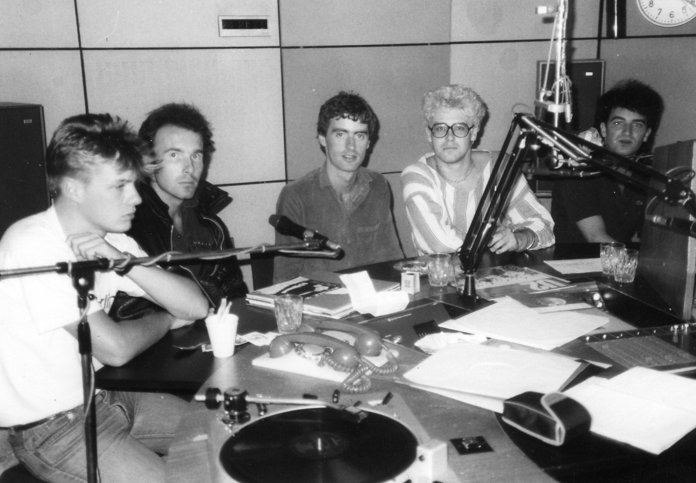

01 / VOCALS
BONO
Paul Hewson. Voz, letras e presença de palco — a linha de frente de uma banda que sempre tratou canções como ideias em movimento.
U250 / THE BAND
Quatro adolescentes se encontraram em Dublin em setembro de 1976. Antes de dominar estádios, eles precisaram aprender a ser uma banda — juntos.

01 / ORIGIN
Larry Mullen colocou um anúncio na escola Mount Temple procurando músicos. Em 25 de setembro de 1976, o grupo se reuniu na cozinha da casa dele em Artane. A primeira formação passou pelos nomes Feedback e The Hype antes de se tornar U2.
O que faltava em técnica sobrava em energia. A identidade do grupo nasceu antes do acabamento: quatro personalidades diferentes aprendendo a funcionar como uma só banda.
02 / FOUR PEOPLE
Paul Hewson. Voz, letras e presença de palco — a linha de frente de uma banda que sempre tratou canções como ideias em movimento.
David Evans. Guitarra, teclados e voz. Um som construído com espaço, textura, delay e uma busca constante por novas formas.
Baixo e fundamento. Nos primeiros dias, antes de Paul McGuinness, Adam chegou a assumir brevemente a função de empresário da banda.
Bateria — e o ponto de partida. Foi o anúncio de Larry que reuniu todos na cozinha em 1976 e colocou a história em movimento.
03 / ERAS
O fio não é uma estética fixa. É a capacidade de desmontar o que funcionou e começar outra vez.
Feedback vira The Hype, depois U2. Boy chega em 1980; em 1983, War amplia a escala e consolida a banda.
Brian Eno e Daniel Lanois entram na história com The Unforgettable Fire. Live Aid amplia o público; The Joshua Tree transforma a escala.
Berlim, Achtung Baby e Zoo TV: uma reinvenção sonora e visual que muda também o espetáculo de rock.
Pop e PopMart levam o excesso ao limite. Depois, All That You Can't Leave Behind recoloca a canção no centro.
A U2 360° leva a banda ao centro do estádio. Depois vêm a memória de Songs of Innocence, a Joshua Tree Tour e Songs of Experience.
U2:UV soma 40 noites na Sphere entre 2023 e 2024. Em 2026, a banda abre outra fase com Street of Dreams, Silencio e Carnaval De Luz.
04 / SOURCE
Esta página reorganiza editorialmente informações publicadas no arquivo oficial do U2 e no acervo do U250.
U2.com / The Band →